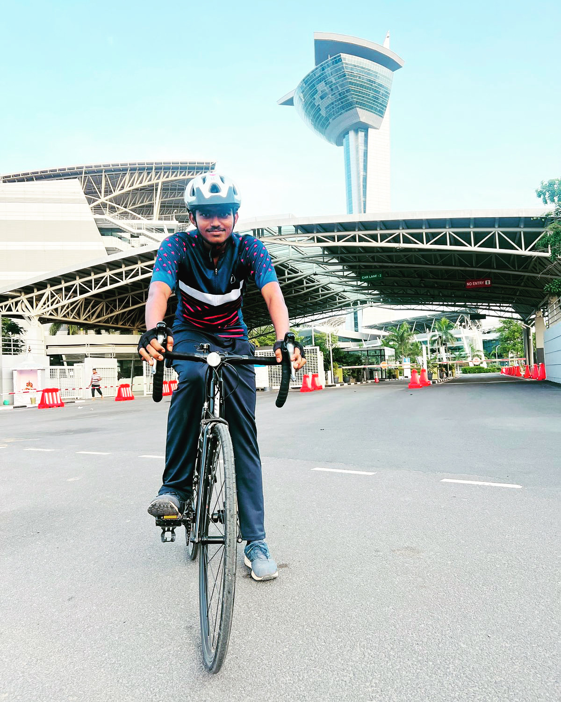
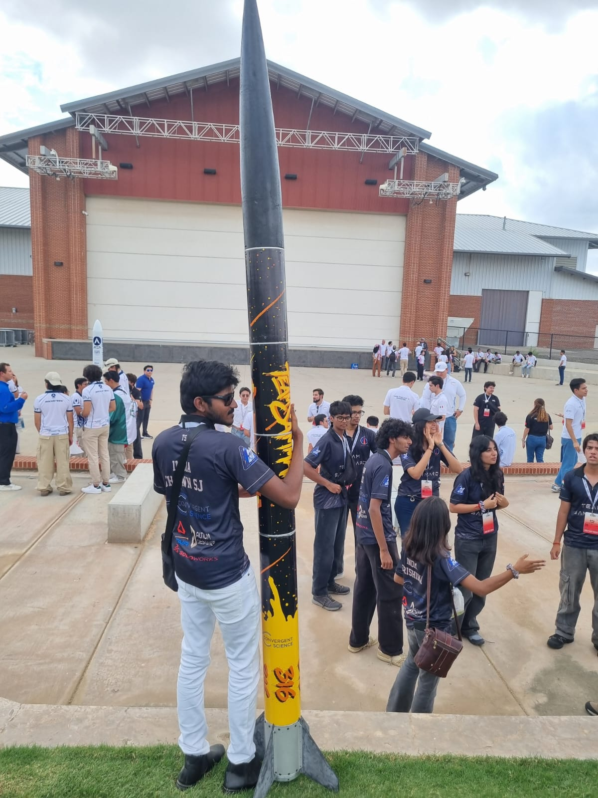
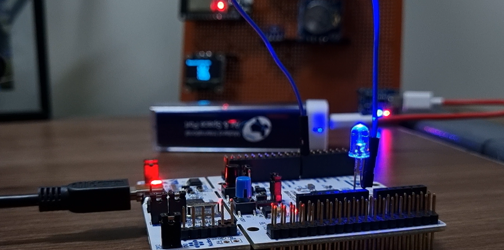
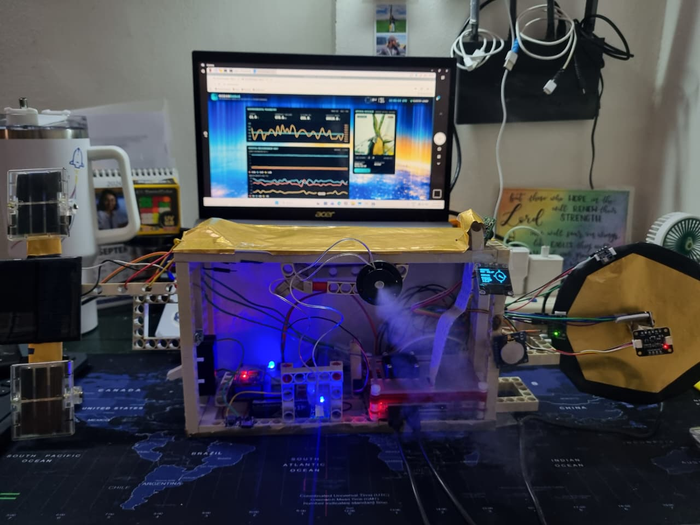
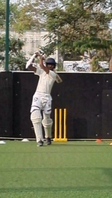

Data Science
Python, Pandas, NumPy, Matplotlib, Seaborn, Data Cleaning, Exploratory Data Analysis, Feature Engineering, Statistics, Data Visualization and Predictive Analytics.
DATA SCIENCE · AI · EMBEDDED SYSTEMS · ROCKETRY
I am Shawn Samjapasinh Joyln, a Computer Science student focused on Data Science, Artificial Intelligence, embedded systems, and aerospace engineering. I enjoy turning data, hardware, and ideas into working real-world systems.
SCROLL TO EXPLORE ↓
ABOUT ME
I am a Computer Science student with a strong interest in Data Science, Artificial Intelligence, embedded systems, and rocketry. My work ranges from analysing datasets and building machine learning models to designing telemetry systems and working with sensors, microcontrollers, and aerospace projects.
I enjoy solving problems that require both software and hardware — collecting real-world data, extracting meaningful insights, and turning those insights into intelligent systems.

SHAWN SAMJAPASINH JOYLNTECHNICAL SKILLS
Python, Pandas, NumPy, Matplotlib, Seaborn, Data Cleaning, Exploratory Data Analysis, Feature Engineering, Statistics, Data Visualization and Predictive Analytics.
Scikit-learn, TensorFlow, Deep Learning, BiLSTM, Random Forest, Computer Vision, YOLO, NLP, Model Evaluation and Machine Learning Pipelines.
SQL, Relational Databases, Data Querying, Joins, Aggregations, Subqueries, Data Filtering, Database Analysis and Data-driven applications.
ESP32, Raspberry Pi, Arduino, C/C++, Python, Sensors, I2C, SPI, UART, GPIO, OLED, GPS, Telemetry and real-time embedded systems.
CanSat systems, flight telemetry, sensor fusion, altitude estimation, GPS, IMU systems, parachute systems, flight-state detection and aerospace experimentation.
Python, Java, HTML, CSS, JavaScript, Flask, REST APIs, Git, GitHub, dashboards and full-stack prototypes.
FEATURED PROJECTS
Data-driven projects involving preprocessing, exploratory analysis, visualization, machine learning models and predictive analytics.
View Code →An aerospace telemetry system combining GPS, IMU, pressure, altitude and environmental sensors with embedded flight-state monitoring and data logging.
View Code →AI-powered systems combining Raspberry Pi, ESP32, sensors, computer vision, machine learning and real-time data processing.
View Code →BEYOND CODE

Building and competing with aerospace systems.

Hardware, telemetry and experimentation.

Exploring embedded systems and space technology.

Competition beyond engineering.
LET'S CONNECT